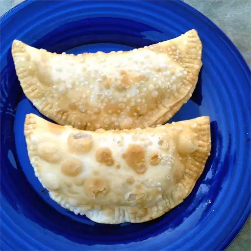

Empanada

Descripcion
La empanada es un bocadillo representativo de la gastronomia argentina que todos hemos degustado en algun momento de nuestra vida. Hoy aprenderas a preparar esta receta
Ingredientes
- 1 libra de carne molida magra
- ½ taza de manteca vegetal
- 2 cebollas medianas , picadas
- 2 cucharaditas de pimentón dulce húngaro
- ¾ cucharadita de pimentón picante
- ½ cucharadita de hojuelas de pimiento rojo triturado
- sal al gusto
- 1 cucharadita de comino molido
- 1 cucharada de vinagre blanco destilado
- ¼ taza de pasas
- 2 huevos duros grandes , picados
- ½ taza de aceitunas verdes sin hueso, picadas
- 1 paquete (17,5 onzas) de hojas de hojaldre congeladas, descongeladas
- 1 huevo grande batido (opcional)
Preparacion
- Coloca la carne molida en un colador grande. Vierte lentamente agua hirviendo sobre la parte superior para cocinarla parcialmente. Deja escurrir y enfriar.
- Mientras tanto, derrita la manteca vegetal en una sartén a fuego medio. Agregue las cebollas; cocine y revuelva hasta que comiencen a dorarse, de 12 a 15 minutos. Retire del fuego y agregue el pimentón dulce, el pimentón picante y las hojuelas de pimiento rojo; sazone con sal.
- Transfiera la carne enfriada a un bol. Mezcle con el vinagre y el comino y sazone con sal. Mezcle bien con las cebollas. Transfiera a un plato grande para que se enfríe y se endurezca, aproximadamente 10 minutos.
- Precaliente el horno a 350 grados F (180 grados C). Cubra una bandeja para hornear con papel pergamino.
- Corta la masa de hojaldre en 10 círculos. Coloca una cucharada de la mezcla de carne sobre cada círculo, asegurándote de que al menos 1/2 pulgada del borde exterior de la masa permanezca limpio y seco. Agrega aceitunas, pasas y huevos duros a cada círculo. Humedece ligeramente los bordes de los círculos de masa, dóblalos por la mitad en forma de medias lunas y presiona los bordes para unirlos. Sella las empanadas retorciendo y enrollando la masa entre el pulgar y el índice, agregando presión antes de soltar cada pellizco y pasar al siguiente.
- Coloque las empanadas en la placa para horno preparada. Pinche cada empanada con un tenedor cerca del borde curvado para permitir que escape el vapor durante la cocción. Pinte las empanadas con huevo batido.
- Hornee en el horno precalentado hasta que esté dorado, de 20 a 30 minutos.